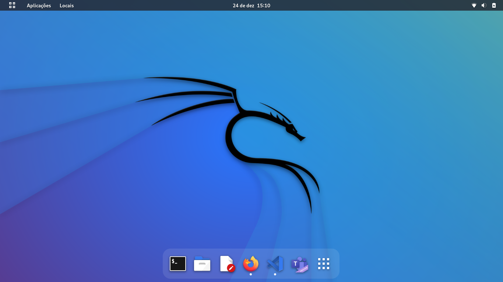
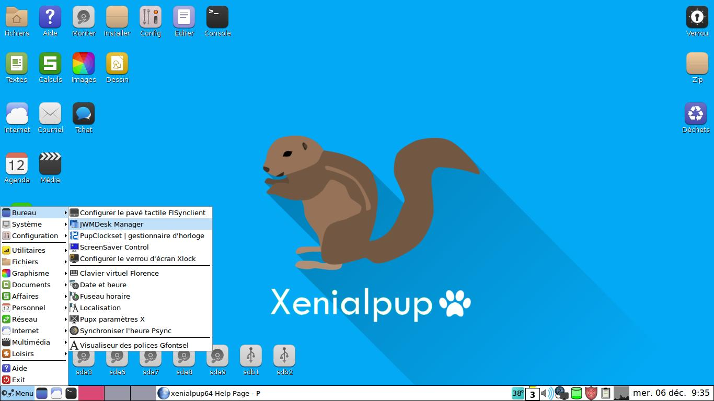
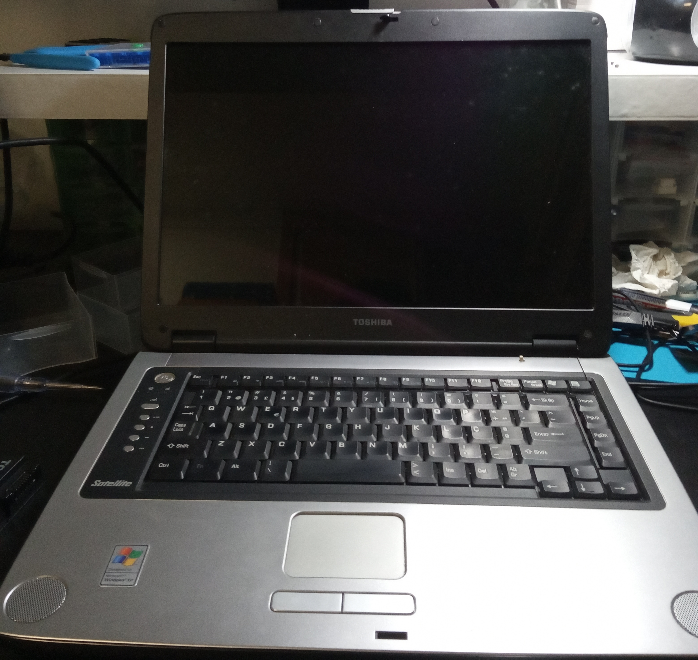

Mudando de Sistema Operativo

Antes de trocar de sistema deve-se ter alguns cuidados, desde compatibilidade ao
armazenamento... Apesar destas situações de trocar o nosso bom e velho Windows por uma
distribuição Linux, parecerem um pouco assustadoras, por vezes é melhor opção para salvar o seu
computador...
Imagine que tem um computador muito velho... E gostaria de o recuperar, sei lá para computador
backup, servidor, ou mesmo para uso pessoal. Não importa se é portátil se não é. Se calhar até
está a ocupar muito espaço para algo que não é utilizado. Não o deite fora, mas sim dá-lhe uma
vida nova!
Vou dar um exemplo, quando andáva noutra escola, tinha um projeto meu que era fazer a minha
impressora 3D, aproveitando impresoras normais. Então um dia mostrei a uma das minhas
professoras o projeto que estava a fazer, então ela disse-me que tinha uma impressora velha que
me podia dar, e também um computador e monitor muito antigo. Eu aceitei! Mais ou menos um ano
depois, depois de entrar no curso e depois de já ter tentado antes pô-lo a funcionar
(funcionava mas não tinha HDD, não fazia o boot por pen e eu não tinha CD's com sistema
operactional), finalmente pû-lo a funcionar com as seguintes características:

Deu bastante trabalho e custou-me imenso tempo, era como um desafio. Bem, o sistema que
utilizei foi o Xenialpup 32-bits colocado no HDD com o programa de computador "YUMI", que foi
dos compatíveis o mais rápido. Sim é Linux, mas é bem melhor que qualquer Windows98, na minha
opinião.

Toshiba Satélite

Apesar de antigo posso dizer que até era bonito para a época. Ganheio pelo o meu pai que
decidiu ceder-me alguns computadores para praticar, e este foi o último depois de ter mostrado
vontade em "salvá-los"...
Sendo este um computador que ainda funcionava bem tive ainda mais cuidado com ele, mesmo com o
ecrã todo estragado, o que não foi um problema depois do meu pai me ter dado um monitor que ele
próprio arranjou. Este sim tem um segredo...